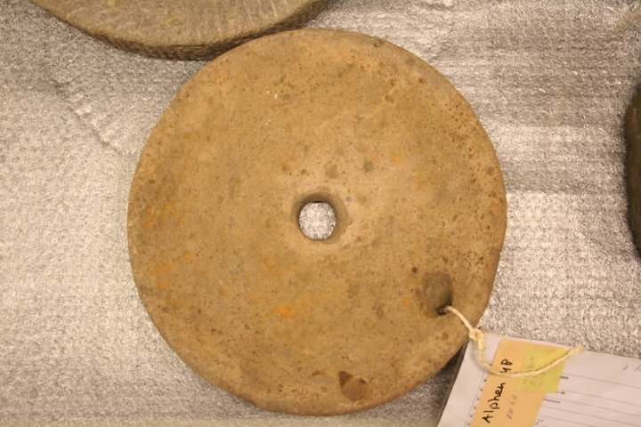

Römische Mühlsteine von Haaksbergen.
Diese beiden Mühlsteine stammen aus der Römerzeit, zwischen dem 1. und 3. Jahrhundert n. Chr. Sie wurden 1933 in 2,5 Metern Tiefe in der Haaksbergerveen entdeckt. Die Steine bestehen aus Basaltlava, einem harten Gestein, das sich gut zum Mahlen von Getreide eignet. Das Set besteht aus einem unteren Stein mit einem Loch und einem oberen Stein mit zwei Löchern. Im kleineren Loch befand sich ein Griff. Durch Drehen des oberen Steins wurde das Getreide zwischen den Steinen gemahlen. Das Mehl trat am Rand aus. Diese Art von Handmühlen war im Alltag unverzichtbar zum Backen von Brot und Brei.